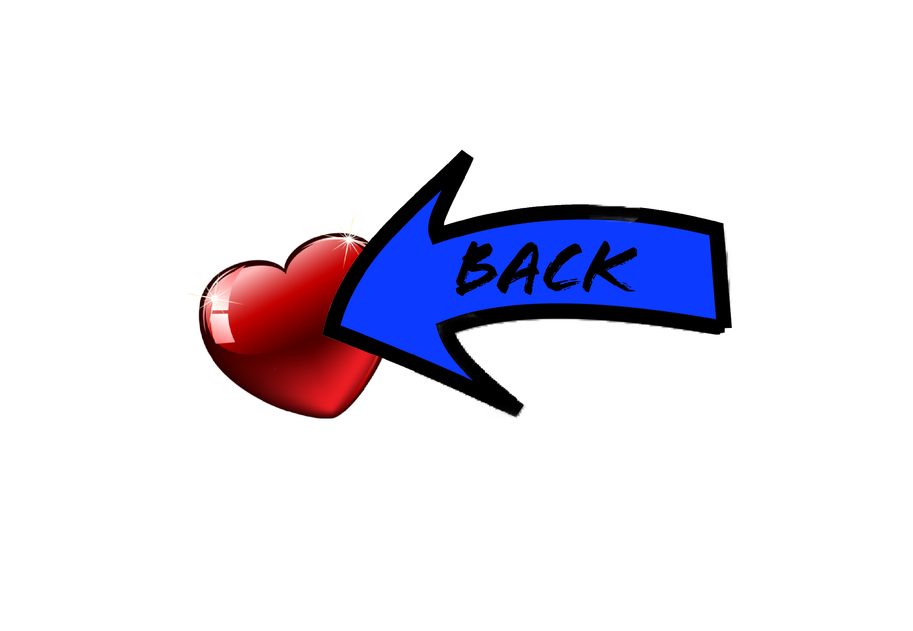

Dear Heart,
Being apart from you is more difficult than I ever imagined. I see reminders of you everywhere I look, and they make me ache to be near you again.
I love you with all my heart. I cherish every moment we spend together, and I love you even more in the moments when we are apart. Tonight as I write this letter, it's like you are right here with me. I feel your hand on my shoulder, your fingers in my hair, and the soft breath of your kiss on my cheek. I miss you, darling. Come home soon.
All my love,
Your Forever Girl